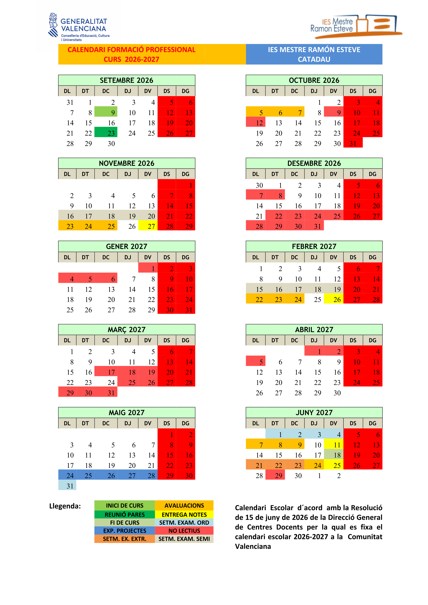

Presentación módulo
1 - Calendario escolar

2 - Horario de sesiones

3 - Contenidos
A continuación, se presentan los contenidos de este módulo tal y como aparecen en la ORDEN de 29 de julio 2009, de la Conselleria de Educación, por la que se establece para la Comunitat Valenciana el currículo del ciclo formativo de Grado Medio correspondiente al título de Técnico en Sistemas Microinformáticos y Redes.
Instalación de aplicaciones ofimáticas
- Tipos de aplicaciones ofimáticas y aplicaciones corporativas.
- Paquetes ofimáticos.
- Tipos de licencias software.
- Necesidades de los entornos de explotación.
- Procedimientos de instalación y configuración.
- Diagnóstico y resolución de problemas.
Elaboración de documentos y plantillas mediante procesadores de texto
– El entorno de trabajo. Personalización.
– Formateo de textos. Párrafos. Páginas y Estilos.
– Encabezamientos. Pies de Página. Notas a pie.
– Esquemas: Viñetas. Listas numeradas.
– Gráficos. Imágenes.
– Índices y Tablas.
– Formularios.
– Impresión de documentos.
– Combinar documentos.
– Creación y uso de plantillas.
– Importación y exportación de documentos.
– Trabajo en grupo: comparar documentos, versiones de documento, verificar cambios, entre otros.
– Diseño y creación de macros.
– Utilización de software y hardware para introducir textos e imágenes.
– Elaboración de distintos tipos de documentos (manuales, partes de incidencias, entre otros).
Elaboración de documentos y plantillas mediante hojas de cálculo
– Entorno de trabajo. Personalización.
– Conceptos básicos: Libro, hoja, celda, rango, etc…
– Formateo de celdas. Estilos.
– Manipulación de datos.
– Rangos.
– Impresión de documentos.
– Utilización de fórmulas y funciones.
– Creación de tablas y gráficos dinámicos.
– Dibujos e imágenes.
– Uso de plantillas y asistentes.
– Importación y exportación de hojas de cálculo.
– Utilización de opciones de trabajo en grupo, control de versiones,verificación de cambios, entre otros.
– Elaboración de distintos tipos de documentos (presupuestos, facturas, inventarios, entre otros).
– Diseño y creación de macros.
Utilización de bases de datos ofimáticas
– Elementos de las bases de datos relacionales.
– Organización de bases de datos relacionales.
– Creación de bases de datos.
– Creación y manejo de tablas.
– Manejo de asistentes.
– Manipulación de datos: Inserción, modificación y borrado.
– Consultas, formularios e informes.
Manipulación de imágenes
– Formatos y resolución de imágenes.
– Manipulación de selecciones, máscaras y capas.
– Utilización de retoque fotográfico, ajustes de imagen y de color.
– Aplicación de filtros y efectos.
– Importación y exportación de imágenes.
– Utilización de dispositivos para obtener imágenes.
Manipulación de vídeos
– Formatos de vídeo. Codecs.
– Manipulación de la línea de tiempo.
– Selección de escenas y transiciones.
– Introducción de títulos y audio.
– Creación y grabación de videos.
– Importación y exportación de vídeos.
Elaboración de presentaciones
– El entorno de trabajo. Personalización.
– Impresión de presentaciones.
– Gráficos, imágenes, dibujos y organigramas.
– Diseño y edición de diapositivas.
– Manipulación de diapositivas. Modo de visualización.
– Formateo de diapositivas, textos y objetos.
– Aplicación de efectos de animación y efectos de transición.
– Aplicación de sonido y vídeo.
– Importación y exportación de presentaciones.
– Utilización de plantillas y asistentes. Patrones de diapositivas.
– Diseño y creación de macros.
Gestión de correo y agenda electrónica
– Entorno de trabajo: configuración y personalización.
– Tipos de cuentas de correo.
– Plantillas y firmas corporativas.
– Foros de noticias (news). Configuración, uso y sincronización de mensajes.
– La libreta de direcciones: importar, exportar, añadir contactos, crear listas de distribución, poner la lista a disposición de otras aplicaciones ofimáticas.
– Gestión de correos: enviar, borrar, guardar, copias de seguridad, entre otros.
– Gestión de la agenda: citas, calendario, avisos, tareas, entre otros.
– Sincronización con dispositivos móviles.
Aplicación de técnicas de soporte
– Elaboración de guías y manuales de uso de aplicaciones.
– Formación al usuario.
– Resolución de incidencias.
– Aplicaciones para la gestión y control de incidencias.
4 - Metodología de aprendizaje
- Exposición de los aspectos teóricos para que después sean aplicados mediante prácticas y ejercicios.
- La metodología de trabajo será el Aprendizaje Basado en Problemas (ABP/PBL). Se propondrá un problema real y los alumnos tendrán que buscar una solución, justificándola y comprobando que funciona. Además, si procede, incluirán un pequeño estudio de necesidades y costes para valorar su viabilidad.
- Las prácticas podrán ser individuales o colectivas.
- Realización de actividades voluntarias de investigación y ampliación para profundizar en los conocimientos adquiridos.
- Proyección de vídeos.
5 - Evaluación
- La evaluación se hará por resultados de aprendizaje RA como indica el R.D. 659/2023
- Los resultados de aprendizaje y criterios de evaluación asociados al módulo Aplicaciones Ofimáticas constituyen los logros que los alumnos/as tienen que alcanzar para superar el módulo.
- Cada resultado de aprendizaje RA se evalúa a través de los criterios de evaluación CE. Los CE actúan como “desglose” del RA, facilitando medir de forma objetiva si el aprendizaje se ha alcanzado.
5.1 - Relación entre Criterios de Evaluación y Resultados de Aprendizaje
Los criterios de evaluación asociados a los resultados de aprendizaje del módulo Aplicaciones Ofimáticas, R.D. 1691/2007, son los siguientes :
| RA1. Instala y actualiza aplicaciones ofimáticas, interpretando especificaciones y describiendo los pasos a seguir en el proceso. | Peso |
|---|---|
| a) Se han identificado y establecido las fases del proceso de instalación. | 15% |
| b) Se han respetado las especificaciones técnicas del proceso de instalación. | 15% |
| c) Se han configurado las aplicaciones según los criterios establecidos. | 15% |
d) Se han documentado las incidencias. |
5% |
| e) Se han solucionado problemas en la instalación o integración con el sistema informático. | 10% |
| f) Se han eliminado y/o añadido componentes de la instalación en el equipo. | 15% |
| g) Se han actualizado las aplicaciones. | 10% |
| h) Se han respetado las licencias software. | 10% |
i) Se han propuesto soluciones software para entornos de aplicación. |
5% |
| RA2. Elabora documentos y plantillas, describiendo y aplicando las opciones avanzadas de procesadores de textos. | peso |
|---|---|
| a) Se ha personalizado las opciones de software y barra de herramientas. | 15% |
| b) Se han diseñado plantillas. | 10% |
| c) Se han utilizado aplicaciones y periféricos para introducir textos e imágenes. | 15% |
| d) Se han importado y exportado documentos creados con otras aplicaciones y en otros formatos. | 15% |
| e) Se han creado y utilizado macros en la realización de documentos. | 10% |
f) Se han elaborado manuales específicos. |
10% |
| RA3. Elabora documentos y plantillas de cálculo, describiendo y aplicando opciones avanzadas de hojas de cálculo. | |
|---|---|
| a) Se ha personalizado las opciones de software y barra de herramientas. | 10% |
| b) Se han utilizado los diversos tipos de datos y referencia para celdas, rangos, hojas y libros. | 10% |
| c) Se han aplicado fórmulas y funciones. | 15% |
| d) Se han generado y modificado gráficos de diferentes tipos. | 10% |
| e) Se han empleado macros para la realización de documentos y plantillas. | 10% |
f) Se han importado y exportado hojas de cálculo creadas con otras aplicaciones y en otros formatos. |
10% |
| g) Se ha utilizado la hoja de cálculo como base de datos: formularios, creación de listas, filtrado, protección y ordenación de datos. | 10% |
| h) Se han utilizado aplicaciones y periféricos para introducir textos, números, códigos e imágenes. | 10% |
| RA4. Elabora documentos con bases de datos ofimáticas describiendo y aplicando operaciones de manipulación de datos. | |
|---|---|
| a) Se han identificado los elementos de las bases de datos relacionales. | 10% |
b) Se han creado bases de datos ofimáticas. |
15% |
| c) Se han utilizado las tablas de la base de datos (insertar, modificar y eliminar registros). | 10% |
| d) Se han utilizado asistentes en la creación de consultas. | 15% |
| e) Se han utilizado asistentes en la creación de formularios. | 15% |
| f) Se han utilizado asistentes en la creación de informes. | 15% |
| g) Se ha realizado búsqueda y filtrado sobre la información almacenada. | 10% |
| h) Se han creado y utilizado macros. | 10% |
| RA5. Manipula imágenes digitales analizando las posibilidades de distintos programas y aplicando técnicas de captura y edición básicas. | |
|---|---|
| a) Se han analizado los distintos formatos de imágenes. | 20% |
b) Se ha realizado la adquisición de imágenes con periféricos. |
25% |
| c) Se ha trabajado con imágenes a diferentes resoluciones, según su finalidad. | 25% |
| d) Se han empleado herramientas para la edición de imagen digital. | 20% |
| e) Se han importado y exportado imágenes en diversos formatos. | 10% |
| RA6. Manipula secuencias de video analizando las posibilidades de distintos programas y aplicando técnicas de captura y edición básicas. | |
|---|---|
| a) Se han reconocido los elementos que componen una secuencia de video. | 20% |
| b) Se han estudiado los tipos de formatos y códecs más empleados. | 20% |
| c) Se han importado y exportado secuencias de video. | 20% |
d) Se han capturado secuencias de video con recursos adecuados. |
20% |
| e) Se han elaborado video tutoriales. | 20% |
| RA7. Elabora presentaciones multimedia describiendo y aplicando normas básicas de composición y diseño. | |
|---|---|
| a) Se han identificado las opciones básicas de las aplicaciones de presentaciones. | 15% |
| b) Se han reconocido los distintos tipos de vista asociados a una presentación. | 10% |
| c) Se han aplicado y reconocido las distintas tipografías y normas básicas de composición, diseño y utilización del color. | 20% |
| d) Se han diseñado plantillas de presentaciones. | 20% |
| e) Se han creado presentaciones. | 30% |
f) Se han utilizado periféricos para ejecutar presentaciones. |
5% |
| RA8. Realiza operaciones de gestión del correo y la agenda electrónica, relacionando necesidades de uso con su configuración. | |
|---|---|
| a) Se han descrito los elementos que componen un correo electrónico. | 5% |
| b) Se han analizado las necesidades básicas de gestión de correo y agenda electrónica. | 20% |
| c) Se han configurado distintos tipos de cuentas de correo electrónico. | 20% |
| d) Se han conectado y sincronizado agendas del equipo informático con dispositivos móviles. | 15% |
e) Se ha operado con la libreta de direcciones. |
5% |
| f) Se ha trabajado con todas las opciones de gestión de correo electrónico (etiquetas, filtros, carpetas, entre otros). | 30% |
g) Se han utilizado opciones de agenda electrónica. |
5% |
| RA9. Aplica técnicas de soporte en el uso de aplicaciones, identificando y resolviendo incidencias. | |
|---|---|
| a) Se han elaborado guías visuales con los conceptos básicos de uso de una aplicación. | 5% |
| b) Se han identificado problemas relacionados con el uso de aplicaciones ofimáticas. | 25% |
| c) Se han utilizado manuales de usuario para instruir en el uso de aplicaciones. | 5% |
| d) Se han aplicado técnicas de asesoramiento en el uso de aplicaciones. | 10% |
| e) Se han realizado informes de incidencias. | 5% |
| f) Se han aplicado los procedimientos necesarios para salvaguardar la información y su recuperación. | 20% |
| g) Se han utilizado los recursos disponibles (documentación técnica, ayudas en línea, soporte técnico, entre otros) para solventar incidencias. | 20% |
h) Se han solventado las incidencias en el tiempo adecuado y con el nivel adecuado. |
10% |
5.2 - Resultados de aprendizaje
En cada unidad de trabajo (UT) se evaluarán los criterios de evaluación (CE) correspondientes al RA.
En el caso concreto del módulo Aplicaciones Ofimáticas, en cada unidad de trabajo (UT), se evaluará un RA.
RA 1 - Instala y actualiza aplicaciones ofimaticas, interpretando especificaciones y describiendo los pasos a seguir en el proceso.
UT 1 - Instalación de aplicaciones ofimáticas.
RA 2 - Elabora documentos y plantillas, describiendo y aplicando las opciones avanzadas de procesadores de textos.
UT 2 - Elaboración de documentos de texto.
RA 7 - Elabora presentaciones multimedia describiendo y aplicando normas básicas de composición y diseño.
UT 3 - Elaboración de presentaciones.
RA 3 - Elabora documentos y plantillas de calculo, describiendo y aplicando opciones avanzadas de hojas de calculo.
UT 4 - Elaboración de hojas de cálculo.
RA 4 - Elabora documentos con bases de datos ofimaticas describiendo y aplicando operaciones de manipulacion de datos
UT 5 - Elaboración de bases de datos ofimáticas.
RA 5 - Manipula imágenes digitales analizando las posibilidades de distintos programas y aplicando técnicas de captura y edición básicas
UT 6 - Edición digital de imágenes.
RA 6 - Manipula secuencias de vídeo analizando las posibilidades de distintos programas y aplicando técnicas de captura y edicion basicas
UT 7 - Edición de videos digital.
RA 8 - Realiza operaciones de gestión del correo y la agenda electrónica, relacionando necesidades de uso con su configuración.
UT 8 - Gestión del correo electrónico.
RA 9 - Aplica técnicas de soporte en el uso de aplicaciones, identificando y resolviendo incidencias.
UT 9 - Resolución de incidencias.
5.3 - Metodología de evaluación
- La evaluación será contínua.
- Se basará en la comprobación de la superación de los resultados de aprendizaje (RA).
- La evaluación se hará sobre todos los RA y todos los CE del currículo.
5.4 - Instrumentos de evaluación
- Exámenes (preguntas tipo test o ejercicios).
- Entrega de tareas.
- Exposiciones orales.
- Prácticas en empresa.
5.5. - Responsable evaluación de los RA's y/o CE's
-
Evaluación por profesor:
Todos lo que no serán evaluados en empresa. -
Evaluación por tutor empresa (dualización de los RA y CE):
d) Se han documentado las incidencias. i) Se han propuesto soluciones software para entornos de aplicación.
f) Se han elaborado manuales específicos.
f) Se han importado y exportado hojas de cálculo creadas con otras aplicaciones y en otros formatos.
b) Se han creado bases de datos ofimáticas.
b) Se ha realizado la adquisición de imágenes con periféricos.
f) Se han capturado secuencias de video con recursos adecuados.
f) Se han utilizado periféricos para ejecutar presentaciones.
e) Se ha operado con la libreta de direcciones.
g) Se han utilizado opciones de agenda electrónica.h) Se han solventado las incidencias en el tiempo adecuado y con el nivel adecuado.
6. - Criterios de superación del módulo
6.1. - Nota final
La nota final será la suma ponderada de los resultados de aprendizaje obtenidos en cada evaluación.
La superación del módulo requerirá obtener una media mínima de 5 sobre 10 en cada resultado de aprendizaje.
En caso de no superar el módulo, el alumna/o dispondrá de un proceso de recuperación orientado a reforzar específicamente los resultados de aprendizaje no alcanzados.
| Resultado de aprendizaje | Porcentage |
|---|---|
| RA 1 - Instala y actualiza aplicaciones ofimaticas, interpretando especificaciones y describiendo los pasos a seguir en el proceso. | 5% |
| RA 2 - Elabora documentos y plantillas, describiendo y aplicando las opciones avanzadas de procesadores de textos. | 19% |
| RA 3 - Elabora documentos y plantillas de calculo, describiendo y aplicando opciones avanzadas de hojas de calculo. | 18% |
| RA 4 - Elabora documentos con bases de datos ofimaticas describiendo y aplicando operaciones de manipulacion de datos. | 18% |
| RA 5 - Manipula imágenes digitales analizando las posibilidades de distintos programas y aplicando técnicas de captura y edicion basicas. | 10% |
| RA 6 - Manipula secuencias de vídeo analizando las posibilidades de distintos programas y aplicando técnicas de captura y edición básicas. | 10% |
| RA 7 - Elabora presentaciones multimedia describiendo y aplicando normas basicas de composicion y diseño. | 10% |
| RA 8 - Realiza operaciones de gestion del correo y la agenda electronica, relacionando necesidades de uso con su configuración. | 5% |
| RA 9 - Aplica técnicas de soporte en el uso de aplicaciones, identificando y resolviendo incidencias. | 5% |
6.2 - Instrumentos de recuperación
- Se propondrá a los alumnos una serie de recuperaciones que le permitirán recuperar los criterios de evaluación no superados.
- Si el alumno no entrega los trabajos obligatorios o presenta tasas de absentismo elevadas, perderá la evaluación continua y deberá presentarse a la evaluación ordinaria y/o extraordinaria.
6.3 - Calendario de evaluaciones
- Evaluación inicial (primer mes).
- Una evaluación parcial por cada trimestre.
- Se darán las notas de los RA completados y también la nota parcial de los RA incompletos.
- Para tener el aprobado será necesario haber alcanzado una puntuación superior o igual a 5 en los Resultados de Aprendizaje RA completados.
- Evaluación ordinaria y extraordinaria: Permitirán recuperar los RA no superados.
6.4 - Condiciones para poder presentarse a las evaluaciones ordinarias y extraordinarias
Para poder presentarse a las convocatorias ordinaria y extraordinaria, el alumnado deberá cumplir con los siguientes requisitos en los RA suspensos:
- Haber presentado al menos una tarea por cada criterio de evaluación.
- Haber obtenido una puntuación mínima de 3/10 en el 60% de las tareas.
En caso de suspender el módulo en la convocatoria ordinaria, se dispondrá de una convocatoria extraordinaria que consistirá en una prueba sobre los RA no superados.
7 - Secuenciación y duración de cada Unidad de Trabajo
flowchart TB
A["RA.1 - Instalación de aplicaciones ofimáticas."]
B["RA.2 - Elaboración de documentos de texto."]
C["RA.3 - Elaboración de hojas de cálculo."]
D["RA.7 - Elaboración de presentaciones."]
E["RA.4 - Elaboración de bases de datos ofimáticas."]
F["RA.5 - Edición digital de imágenes."]
G["RA.1-Edición de videos digital."]
H["RA.1-Gestión de correo electrónico."]
I["RA.1-Resolución de incidencias."]
AA["7h"]
BB["42h"]
CC["42h"]
DD["21h"]
EE["28h"]
FF["21h"]
GG["21h"]
HH["4h"]
II["5h"]
subgraph Orden y duración de las UT
subgraph UT9
direction LR
I --> II
end
subgraph UT8
direction LR
H --> HH
end
subgraph UT7
direction LR
G --> GG
end
subgraph UT6
direction LR
F --> FF
end
subgraph UT5
direction LR
E --> EE
end
subgraph UT4
direction LR
D --> DD
end
subgraph UT3
direction LR
C --> CC
end
subgraph UT2
direction LR
B --> BB
end
subgraph UT1
direction LR
A --> AA
end
end| Licencia Creative Commons: | |
|---|---|
 |
Reconocimiento-NoComercial-CompartirIgual CC BY-NC-SA: No se permite un uso comercial de la obra original ni de las posibles obras derivadas, la distribución de la cuales se debe hace con una licencia igual a la que regula la obra original. |